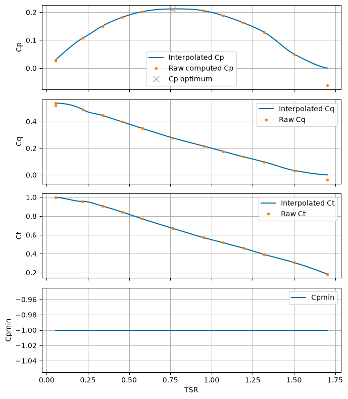
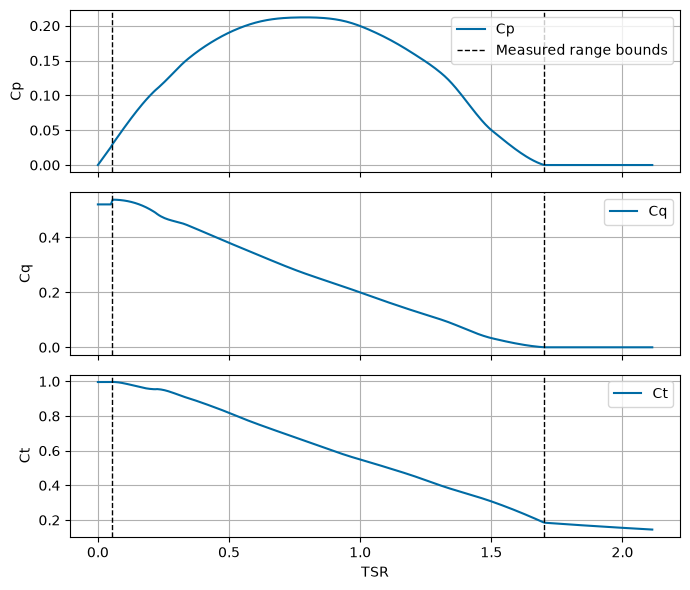
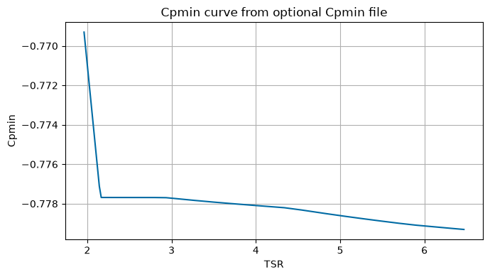

Tutorial 3: Defining Rotor Data (module_rotor)
This tutorial demonstrates how to load and inspect rotor performance data using the RotorData class in vital.module_rotor.
The current RotorData implementation expects rotor performance data with the following required columns:
Column |
Meaning |
|---|---|
|
Tip-speed ratio |
|
Thrust coefficient |
|
Torque coefficient |
The power coefficient is computed internally as:
Therefore, the input rotor data file does not need to include a Cp column. Some rotor files may include Cp for reference, but VITAL recomputes \(C_p\) from TSR and Cq.
This tutorial covers:
Importing required modules.
Loading rotor performance data.
Inspecting optimal \(C_p\) and TSR values.
Evaluating interpolated rotor coefficients.
Inspecting the maximum TSR used by the simulation.
Plotting rotor performance curves.
Optionally inspecting extrapolated behavior outside the measured TSR range.
Optionally loading Cpmin data for cavitation checks.
Notes for new users
Rotor data are sorted by
TSRinternally.Duplicate
TSRvalues are removed.Cq,Ct, and computedCpvalues are clipped to be nonnegative.Cpminvalues are clipped to be nonpositive.If no Cpmin file is supplied, the code assumes \(C_{p,\min} = -1.0\) for all TSR values.
The code uses PCHIP interpolation for
CqandCt.Outside the supplied TSR range, the code applies simplified extrapolation behavior:
Below the measured TSR range,
CqandCtare held at the first measured value.Above the measured TSR range,
CqandCtdecay exponentially toward zero.
These extrapolated values should not be treated as validated rotor performance.
[1]:
from pathlib import Path
import numpy as np
import pandas as pd
import matplotlib.pyplot as plt
from vital.module_rotor import RotorData
1. Load rotor data
The rotor data file must contain at least:
TSRCtCq
For this example, we load the Sitkana rotor data file.
If Cpmin data are available, a Cpmin JSON file can also be supplied. Cpmin data are used in the cavitation constraint. If no Cpmin file is supplied, RotorData uses \(C_{p,\min} = -1.0\) by default.
[2]:
# Sitkana rotor data
rotor_performance_file = "../data/Sitkana_rotor_data_blade_2.txt"
# No Cpmin file is supplied here, so Cpmin defaults to -1.0.
rotor = RotorData(rotor_performance_file)
# Optional Sandia rotor data with Cpmin file
# rotor_performance_file = "../data/Sandia_rotor_data.txt"
# cpmin_filename = "../data/Cpmin_data.json"
# rotor = RotorData(rotor_performance_file, cpmin_filename=cpmin_filename)
2. Inspect the loaded rotor data
The RotorData object stores the processed rotor arrays as:
rotor.tsrrotor.ctrotor.cqrotor.cprotor.cpmin
Recall that rotor.cp is computed internally from:
[3]:
print(f"Rotor data file: {rotor.filename}")
print(f"Cpmin file: {rotor.cpmin_filename}")
print()
print(f"Number of rotor data points: {len(rotor.tsr)}")
print(f"TSR range: {rotor.tsr.min():.4f} to {rotor.tsr.max():.4f}")
print(f"Ct range: {rotor.ct.min():.4f} to {rotor.ct.max():.4f}")
print(f"Cq range: {rotor.cq.min():.4f} to {rotor.cq.max():.4f}")
print(f"Cp range: {rotor.cp.min():.4f} to {rotor.cp.max():.4f}")
print(f"Cpmin range: {rotor.cpmin.min():.4f} to {rotor.cpmin.max():.4f}")
Rotor data file: ../data/Sitkana_rotor_data_blade_2.txt
Cpmin file: None
Number of rotor data points: 14
TSR range: 0.0526 to 1.7015
Ct range: 0.1845 to 0.9968
Cq range: 0.0000 to 0.5373
Cp range: 0.0000 to 0.2119
Cpmin range: -1.0000 to -1.0000
3. Access optimal \(C_p\) and TSR
The RotorData class identifies the maximum computed \(C_p\) value and the corresponding tip-speed ratio.
These values are stored as:
rotor.CpOptrotor.TSROpt
The rotor simulation uses these values to construct the optimal torque-control law.
[4]:
print(f"Optimal Cp: {rotor.CpOpt:.6f}")
print(f"Optimal TSR: {rotor.TSROpt:.6f}")
Optimal Cp: 0.211890
Optimal TSR: 0.764770
4. Interpolate rotor performance values
The rotor object provides methods for evaluating rotor coefficients at arbitrary TSR values:
rotor.get_cp(tsr)rotor.get_ct(tsr)rotor.get_cq(tsr)rotor.get_cpmin(tsr)
Inside the original data range, Ct and Cq use PCHIP interpolation.
Outside the measured data range, the current extrapolation assumptions are:
For TSR below the first measured TSR,
CqandCtare held at their first measured values.For TSR above the last measured TSR,
CqandCtdecay exponentially toward zero.
Because \(C_p\) is computed as
\(C_p\) still approaches zero as \(TSR\) approaches zero, even if \(C_q\) is held nonzero below the measured range.
[5]:
tsr_value = rotor.TSROpt
cp_value = rotor.get_cp(tsr_value)
ct_value = rotor.get_ct(tsr_value)
cq_value = rotor.get_cq(tsr_value)
cpmin_value = rotor.get_cpmin(tsr_value)
print(f"Cp at TSR {tsr_value:.6f}: {cp_value:.6f}")
print(f"Ct at TSR {tsr_value:.6f}: {ct_value:.6f}")
print(f"Cq at TSR {tsr_value:.6f}: {cq_value:.6f}")
print(f"Cpmin at TSR {tsr_value:.6f}: {cpmin_value:.6f}")
Cp at TSR 0.764770: 0.211890
Ct at TSR 0.764770: 0.669810
Cq at TSR 0.764770: 0.277064
Cpmin at TSR 0.764770: -1.000000
5. Find maximum TSR
The RotorData class estimates a maximum TSR where either \(C_p\) or \(C_t\) becomes zero.
Because the high-TSR extrapolation decays exponentially toward zero, it may not exactly cross zero unless the supplied data already reach zero. If no zero crossing is found over the search interval, the method returns the end of the search interval.
This value is stored as:
rotor.TSRmax
and can also be recalculated using:
rotor.find_tsr_max()
This maximum TSR is used by downstream rotor simulation workflows.
[6]:
print(f"Stored TSRmax: {rotor.TSRmax:.6f}")
tsr_max_recomputed = rotor.find_tsr_max()
print(f"Recomputed TSRmax: {tsr_max_recomputed:.6f}")
Stored TSRmax: 1.708390
Recomputed TSRmax: 1.708390
6. Load the raw rotor data for comparison
Here we load the same rotor data file with pandas so we can compare the raw input values with the processed/interpolated curves.
The file is read using a flexible whitespace/tab separator, matching the behavior in RotorData.
[7]:
raw_data = pd.read_csv(rotor_performance_file, sep=r"\s+|\t", engine="python")
print("Raw rotor data columns:")
print(list(raw_data.columns))
required_columns = {"TSR", "Ct", "Cq"}
missing_columns = required_columns - set(raw_data.columns)
if missing_columns:
raise ValueError(f"Rotor data file is missing required columns: {missing_columns}")
# Compute raw Cp for plotting, regardless of whether the file includes a Cp column.
raw_data["Cp_computed"] = raw_data["TSR"] * raw_data["Cq"]
raw_data.head()
Raw rotor data columns:
['TSR', 'Ct', 'Cq', 'Cp']
[7]:
| TSR | Ct | Cq | Cp | Cp_computed | |
|---|---|---|---|---|---|
| 0 | 0.052589 | 0.99615 | 0.519938 | 0.027343 | 0.027343 |
| 1 | 0.052617 | 0.99684 | 0.537260 | 0.028269 | 0.028269 |
| 2 | 0.220050 | 0.95461 | 0.489434 | 0.107700 | 0.107700 |
| 3 | 0.220200 | 0.95559 | 0.489192 | 0.107720 | 0.107720 |
| 4 | 0.337890 | 0.90637 | 0.445707 | 0.150600 | 0.150600 |
7. Visualize rotor performance curves
The plots below show:
\(C_p\)
\(C_q\)
\(C_t\)
\(C_{p,\min}\)
The points show the raw data values, while the lines show the values returned by the RotorData interpolation methods.
The plots below are restricted to the measured TSR range. This avoids implying that VITAL knows the correct low-TSR or high-TSR behavior outside the supplied rotor data.
If no Cpmin file was supplied, the Cpmin curve will be a constant value of \(-1.0\).
[8]:
# Plot only over the measured rotor-data range.
# This avoids implying that VITAL knows the correct low-TSR or high-TSR
# behavior outside the supplied rotor data.
tsr_plot_min = rotor.tsr.min()
tsr_plot_max = rotor.tsr.max()
tsr_values = np.linspace(tsr_plot_min, tsr_plot_max, 200)
cp_values = rotor.get_cp(tsr_values)
cq_values = rotor.get_cq(tsr_values)
ct_values = rotor.get_ct(tsr_values)
cpmin_values = rotor.get_cpmin(tsr_values)
fig, axes = plt.subplots(4, 1, figsize=(7, 8), sharex=True)
# Cp
axes[0].plot(tsr_values, cp_values, label="Interpolated Cp")
axes[0].plot(raw_data["TSR"], raw_data["Cp_computed"], ".", label="Raw computed Cp")
axes[0].plot(rotor.TSROpt, rotor.CpOpt, "x", markersize=8, label="Cp optimum")
axes[0].set_ylabel("Cp")
axes[0].legend(loc="best")
axes[0].grid(True)
# Cq
axes[1].plot(tsr_values, cq_values, label="Interpolated Cq")
axes[1].plot(raw_data["TSR"], raw_data["Cq"], ".", label="Raw Cq")
axes[1].set_ylabel("Cq")
axes[1].legend(loc="best")
axes[1].grid(True)
# Ct
axes[2].plot(tsr_values, ct_values, label="Interpolated Ct")
axes[2].plot(raw_data["TSR"], raw_data["Ct"], ".", label="Raw Ct")
axes[2].set_ylabel("Ct")
axes[2].legend(loc="best")
axes[2].grid(True)
# Cpmin
axes[3].plot(tsr_values, cpmin_values, label="Cpmin")
axes[3].set_ylabel("Cpmin")
axes[3].set_xlabel("TSR")
axes[3].legend(loc="best")
axes[3].grid(True)
plt.tight_layout()
plt.show()

8. Optional: Inspect extrapolated behavior
The main rotor performance plot is restricted to the measured TSR range.
The cell below intentionally plots slightly outside the measured range so users can inspect the current extrapolation assumptions:
Below the measured TSR range,
CqandCtare held at the first measured value.Above the measured TSR range,
CqandCtdecay exponentially toward zero.
These extrapolated values are modeling assumptions and should not be treated as validated rotor performance. For best results, users should provide rotor data over the expected operating TSR range.
[9]:
# Optional extrapolation plot.
# This intentionally shows behavior outside the measured TSR range.
tsr_span = rotor.tsr.max() - rotor.tsr.min()
tsr_extrap_min = max(0.0, rotor.tsr.min() - 0.25 * tsr_span)
tsr_extrap_max = rotor.tsr.max() + 0.25 * tsr_span
tsr_extrap = np.linspace(tsr_extrap_min, tsr_extrap_max, 300)
fig, axes = plt.subplots(3, 1, figsize=(7, 6), sharex=True)
# Cp
axes[0].plot(tsr_extrap, rotor.get_cp(tsr_extrap), label="Cp")
axes[0].axvline(rotor.tsr.min(), color="k", linestyle="--", linewidth=1, label="Measured range bounds")
axes[0].axvline(rotor.tsr.max(), color="k", linestyle="--", linewidth=1)
axes[0].set_ylabel("Cp")
axes[0].legend(loc="best")
axes[0].grid(True)
# Cq
axes[1].plot(tsr_extrap, rotor.get_cq(tsr_extrap), label="Cq")
axes[1].axvline(rotor.tsr.min(), color="k", linestyle="--", linewidth=1)
axes[1].axvline(rotor.tsr.max(), color="k", linestyle="--", linewidth=1)
axes[1].set_ylabel("Cq")
axes[1].legend(loc="best")
axes[1].grid(True)
# Ct
axes[2].plot(tsr_extrap, rotor.get_ct(tsr_extrap), label="Ct")
axes[2].axvline(rotor.tsr.min(), color="k", linestyle="--", linewidth=1)
axes[2].axvline(rotor.tsr.max(), color="k", linestyle="--", linewidth=1)
axes[2].set_ylabel("Ct")
axes[2].set_xlabel("TSR")
axes[2].legend(loc="best")
axes[2].grid(True)
plt.tight_layout()
plt.show()

9. Optional: Load rotor data with Cpmin
Cpmin data are used by the cavitation constraint. If a Cpmin JSON file is available, pass it to RotorData.
The Cpmin JSON file is expected to contain:
TSRCpmin
The implementation currently uses the tip curve stored under Cpmin["0"].
Example:
rotor = RotorData(
"../data/Sandia_rotor_data.txt",
cpmin_filename="../data/Cpmin_data.json",
)
If no Cpmin file is supplied, the software assumes:
for all TSR values.
[10]:
# Optional example. This cell only runs if the files exist.
optional_rotor_file = Path("../data/Sandia_rotor_data.txt")
optional_cpmin_file = Path("../data/Cpmin_data.json")
if optional_rotor_file.exists() and optional_cpmin_file.exists():
rotor_with_cpmin = RotorData(
str(optional_rotor_file),
cpmin_filename=str(optional_cpmin_file),
)
print("Loaded optional rotor with Cpmin data.")
print(f"Optimal Cp: {rotor_with_cpmin.CpOpt:.6f}")
print(f"Optimal TSR: {rotor_with_cpmin.TSROpt:.6f}")
print(f"Cpmin range: {rotor_with_cpmin.cpmin.min():.6f} to {rotor_with_cpmin.cpmin.max():.6f}")
tsr_values_optional = np.linspace(
rotor_with_cpmin.tsr.min(),
rotor_with_cpmin.tsr.max(),
200,
)
plt.figure(figsize=(7, 4))
plt.plot(tsr_values_optional, rotor_with_cpmin.get_cpmin(tsr_values_optional))
plt.xlabel("TSR")
plt.ylabel("Cpmin")
plt.title("Cpmin curve from optional Cpmin file")
plt.grid(True)
plt.tight_layout()
plt.show()
else:
print("Optional Sandia rotor or Cpmin file not found. Skipping optional Cpmin example.")
Loaded optional rotor with Cpmin data.
Optimal Cp: 0.435735
Optimal TSR: 3.917464
Cpmin range: -0.779307 to -0.769303
